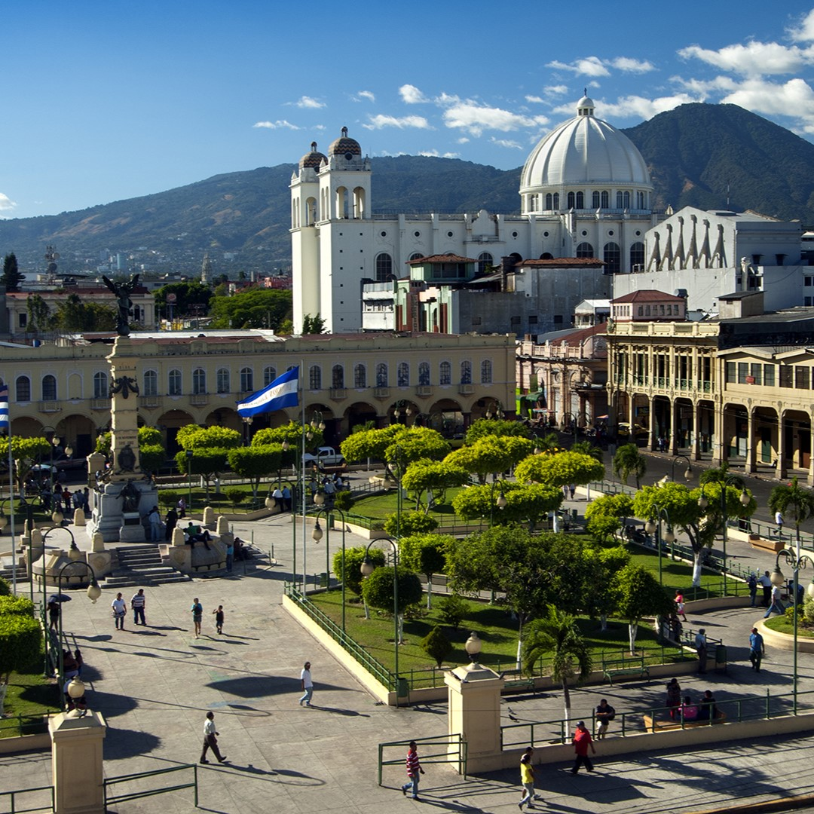
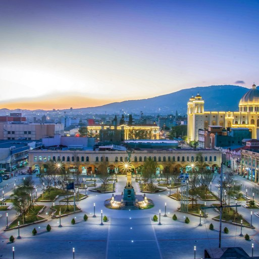
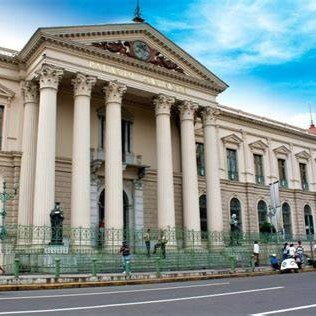

.jpg)
Acerca de Mí
¡Hola! Bienvenido a mi página web, soy Steven Trujillo, tengo 18 años y soy residente de San Salvador, El Salvador. Mi casa tiene muchos arboles y plantas, por lo que en mis ratos libres, salgo al patio a despejar mi mente. Me encanta dibujar paisajes y disfruto tocar piano. También, soy padre de dos perrihijas: Pimienta y Negrita.
Hobbies
Me gusta tocar el piano porque me relaja mucho cuando estoy estresado, mi pieza favorita es "Merry Go Round". También en momentos de estrés, me pongo a ver series o leer libros. Mi última serie fue Breaking Bad y mi libro favorito es "22/11/63" de Stephen King.
Mi Ciudad
San Salvador
La ciudad más grande del país, a solo 30 minutos de su Aeropuerto Internacional, nos ofrece espacios antiguos conviviendo con modernos centros comerciales, donde los poderes públicos y las industrias tienen su sede, con opciones tanto para el ocio como para el disfrute de la vida en la naturaleza.
Leer Más...Centro histórico
Contando con palacios, bibliotecas, teatros, ex cines y plazas importantes, el Centro Histórico de San Salvador ofrece a turistas nacionales e internacionales variadas opciones turísticas que permiten interactuar y conocer a profundidad la cultura salvadoreña.
Leer Más...Biblioteca Nacional
El Salvador ya cuenta con una nueva Biblioteca Nacional que prestará servicio las 24 horas del día, todos los días del año, lo que la convierte en la primera en el mundo en su forma de gestión. El moderno edificio 5G cuenta con Internet en los siete niveles de los que consta y estará al servicio de la población salvadoreña día a día.
Leer Más...Palacio Nacional
El Palacio Nacional de El Salvador es una de las edificaciones más simbólicas y majestuosas del país. Considerado como uno de los monumentos emblemáticos de El Salvador, el palacio fue construido, originalmente, para albergar los tres órganos de poder del Estado salvadoreño, junto a sus oficinas.
Leer Más...